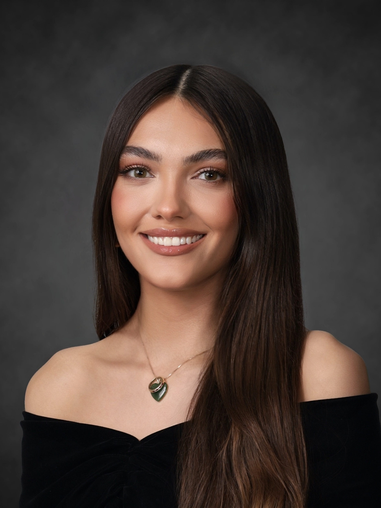
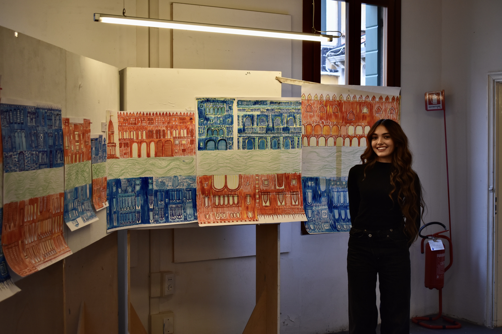

I am an undergraduate student pursuing a Bachelor of Arts in Architectural Studies and Art History at Boston University, where I am part of the Class of 2027. I grew up in Syracuse, NY, and am a QuestBridge Scholar.
In Fall 2025 I studied at the Boston University Venice Academy, where I developed an extended body of architectural work: a gondola-inspired exhibition building for an art school, large-scale drawing studies of the Grand Canal and Venetian facades, and analytical diagrams of Ca' Pesaro and Ca' Dario. I also sketched cathedrals in Barcelona and buildings throughout Europe as part of a continuing observational drawing practice.
At BU my coursework has included Advanced Architectural Site Design, Drawing Through the Lens of Architecture, American Cultural Landscape Studies, and Urban Sociology. My studio projects explore how architecture creates meaningful connections between people, landscape, and cultural identity, including a Snøhetta-inspired library design developed as a symbolic "set of hands" within the urban fabric.
Alongside architecture I maintain a personal art practice in painting and mixed media, attending to light, the natural world, and figural work. I am interested in sustainable design, urban planning, and travel photography.
Available for internships, collaboration, and commissions.
ss0308@bu.edu
